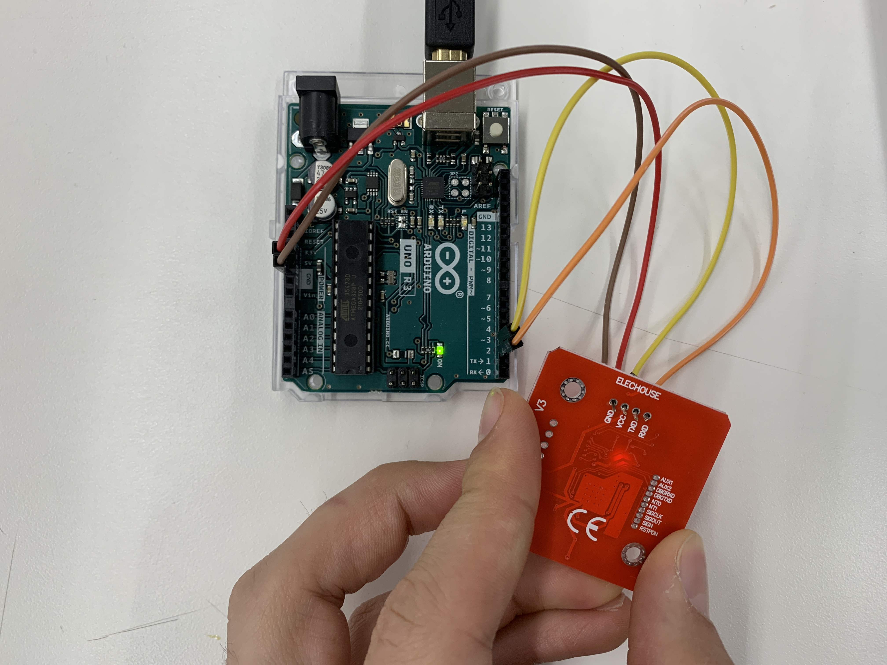
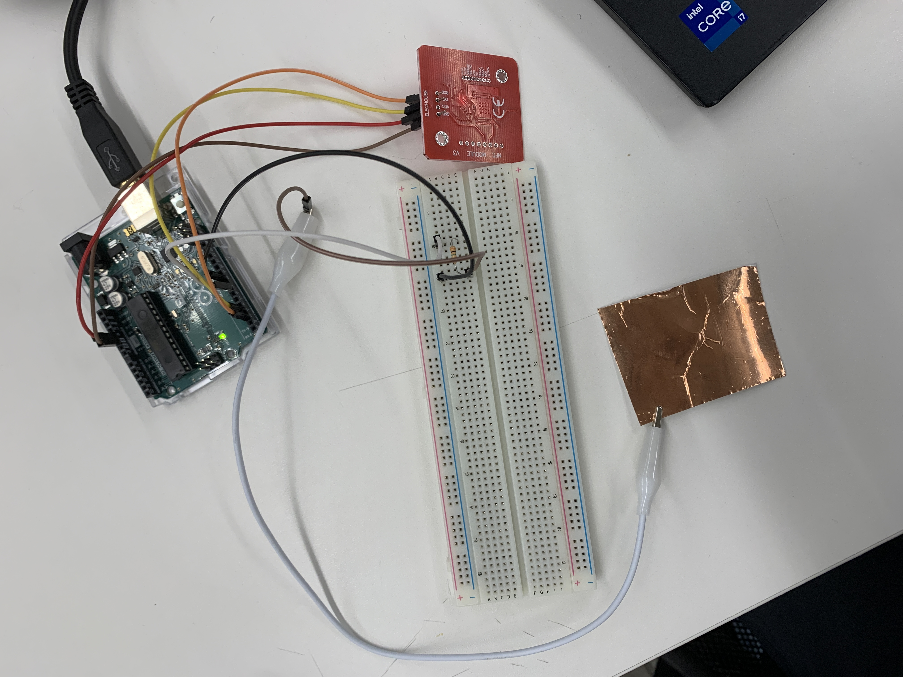

Introduction
This week the goal was to work with Input Devices. This is probably the most important week thus far in the context of preparing
for the final project. I recently restructured my final project to something that I think better fits into the context of the
tools and skills of the course. For my final project, I will rely on some pretty solid communication between input devices and
output devices (which we will handle next week), which will likely involve a ton of less than fun programming! Something that has
already proven to be an annoying challenge for this week - who likes programming in C? It's probably the worst language ever.
Anyways, because of this, I am deviating from the sampled assignment structure for the week to allow me to focus on input based
devices and modes that will be particularly relevant towards my project, and to begin developing a code structure that will be
conducive for communication with the output devices I will work on in the coming weeks - primarily a large digital display and
a system of pumps.
NFC Reader
A super integral part of my final project is the NFC reader for identifying what cocktails to be made. Its not actually a critical
thing for functionality, but I always envisioned having it, so at this point it's essential.
The setup will be that there will be a collection of NFC cards, 1 for each cocktail. Then the user can pick one of those cards and
tap it onto the machine, which will then begin an instructional process to take the user through each of the steps of the cocktail.
So, the goal for this segment is to wire an NFC reader to the arduino system, and have it interpret different cards into different
strings of text.

Thankfully, the PN532 (NFC card chip) has a relatively straight forward setup for the system. So, I set up the card to basically just
be recognized by the arudino, and then check for any input NFC inputs. After I got that working, I began cataloging different tags
from the cards and fobs that I own, and assigning each to a cocktail. These are then interpreted in the readTag function in the code below.
The final step was to make the code much better functionally. First, I removed all delay systems, so the reader now runs on the millis
command protocol, which will be important to allow the nfc card reader to be scanning while other parts of the system are still operational.
Secondly, within the reading function, there is a certain amount of memory regarding what has been read so far via storaging the previous
value as a temporary variable. The key feature of this is that if the NFC reader reads the same tag that it most recently read, it wont
proceed with the rest of the functionality. This prevents it from reading the same card multiple times at once, and prevents users from
getting unintended functionality.
Thus we finally end up with this output, where you can read a card or fob, and the system will generate a serial command (this will later
be information on the digital display), and it is robust to handle bad information, and other basic tampering.
#include
#include
#include
SoftwareSerial SWSerial( 3, 2 ); // RX, TX
PN532_SWHSU pn532swhsu( SWSerial );
PN532 nfc( pn532swhsu );
String tagId = "None", dispTag = "None";
byte nuidPICC[4];
String drink;
long previousMillis = 0;
long interval = 500;
void setup(void)
{
Serial.begin(115200);
delay(100);
Serial.println("Hello Maker, I am BarBot!");
// Serial2.begin(115200, SERIAL_8N1, RXD2, TXD2);
nfc.begin();
uint32_t versiondata = nfc.getFirmwareVersion();
if (! versiondata)
{
Serial.println("Didn't Find PN53x Module");
while (1); // Halt
}
// Got valid data, print it out!
Serial.print("Found chip PN5");
Serial.println((versiondata >> 24) & 0xFF, HEX);
Serial.print("Firmware ver. ");
Serial.print((versiondata >> 16) & 0xFF, DEC);
Serial.print('.');
Serial.println((versiondata >> 8) & 0xFF, DEC);
// Configure board to read RFID tags
nfc.SAMConfig();
drink = "";
//Serial.println("Waiting for an ISO14443A Card ...");
}
void loop()
{
readNFC();
}
String readTag(String tagId)
{
// Takes in a tag string and Identifies what it should be recognized as for drinks
if (tagId.equals("50.40.36.33"))
{
return "Mojito";
}
if (tagId.equals("34.126.220.33"))
{
return "Gin and Tonic";
}
if (tagId.equals("17.136.236.38"))
{
return "Wiskey Sour";
}
return "Invalid Tag";
}
String tagToString(byte id[4])
{
String tagId = "";
for (byte i = 0; i < 4; i++)
{
if (i < 3) tagId += String(id[i]) + ".";
else tagId += String(id[i]);
}
return tagId;
}
void readNFC()
{
unsigned long currentMillis = millis();
if(currentMillis - previousMillis > interval)
{
boolean success;
uint8_t uid[] = { 0, 0, 0, 0, 0, 0, 0 }; // Buffer to store the returned UID
uint8_t uidLength; // Length of the UID (4 or 7 bytes depending on ISO14443A card type)
success = nfc.readPassiveTargetID(PN532_MIFARE_ISO14443A, &uid[0], &uidLength);
if (success)
{
// save the last time you read NFC
previousMillis = currentMillis;
//Serial.print("UID Length: ");
//Serial.print(uidLength, DEC);
//Serial.println(" bytes");
//Serial.print("UID Value: ");
for (uint8_t i = 0; i < uidLength; i++)
{
nuidPICC[i] = uid[i];
//Serial.print(" "); Serial.print(uid[i], DEC);
}
//Serial.println();
tagId = tagToString(nuidPICC);
dispTag = tagId;
//Serial.print(F("tagId is : "));
//Serial.println(tagId);
//Serial.println("");
//print out the drink
String tempDrink = readTag(tagId);
if (!drink.equals(tempDrink))
{
if(!tempDrink.equals("Invalid Tag"))
{
Serial.print("Cocktail Selected: ");
}
Serial.print(tempDrink);
Serial.println("");
drink = tempDrink;
}
}
else
{
// PN532 probably timed out waiting for a card
//Serial.println("Timed out! Waiting for a card...");
}
}
}
Capacitive Sensor
The second part of the assignment is to create a capacitive sensor in order to measure some sort of values by determining a change
in capacitance (more or less). The second major input system I need is buttons. They will be needed to scroll through menu items,
and then select modes and options. So, I decided to go for a capacitance sensor that is going to measure some discharge caused by
something grounding touching the sensor plate. This will be good if I choose to go for a button system that isn't tactile with a
depression mechanism, but instead is almost like a touch screen.

This is the circuit I ended up going with, using a copper plate as the medium for capacitance.
As for programming. The way it works is by quickly reading and writing 1000 differentials, and then measuring the time to loop
through all of these. If nothing is on the copper plate it will have a relatively constant output reading. But if I, or something
else grounded touches the plate, this differential time will increase, so the readings will be higher. Unfortunately, capacitive
sensors are incredibly unreliable, and often getting varying values and results. To counteract this, when the system is started,
a initial report is done that will be the "baseline" for that set of values. Then in the actual reading function, it is merely
determining if there is a delta microseconds jump of atleast 50 microseconds. This allows the sensor to not have any hard coded
values that would prevent it from working properly when used in different locations or times (as a capacitance sensor often
would have varying results in these situations). Also, I implemented the millis functionality to allow concurrrent processes to
prep the code for integration with my final project. So to summarize, when this delta is detected, the system logs that the button
has been pressed, tada! This will prove to be really useful for the final project and getting a smooth touch style button.

float baseline;
void setup() {
Serial.begin(9600);
pinMode(7, OUTPUT);
pinMode(8, INPUT);
// set baseline
long start = micros();
for(int count=0; count<1000; count++){
digitalWrite(7, HIGH);
while(!digitalRead(8)){
}
digitalWrite(7, LOW);
while(digitalRead(8)){
}
}
baseline = micros() - start;
Serial.println("Button Sensor");
Serial.print("Baseline Value: ");
Serial.print(baseline);
Serial.println("");
}
long previousMillis = 0;
long interval = 250;
void loop() {
checkButton();
}
void checkButton()
{
unsigned long currentMillis = millis();
if(currentMillis - previousMillis > interval)
{
long start = micros();
for(int count=0; count<1000; count++){
digitalWrite(7, HIGH);
while(!digitalRead(8)){
}
digitalWrite(7, LOW);
while(digitalRead(8)){
}
}
long deltaMicro = micros() - start - baseline;
if (deltaMicro > 50)
{
Serial.println("Button Pressed");
previousMillis = currentMillis;
}
}
}